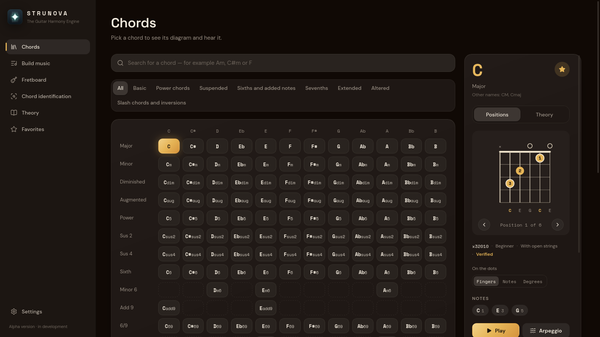
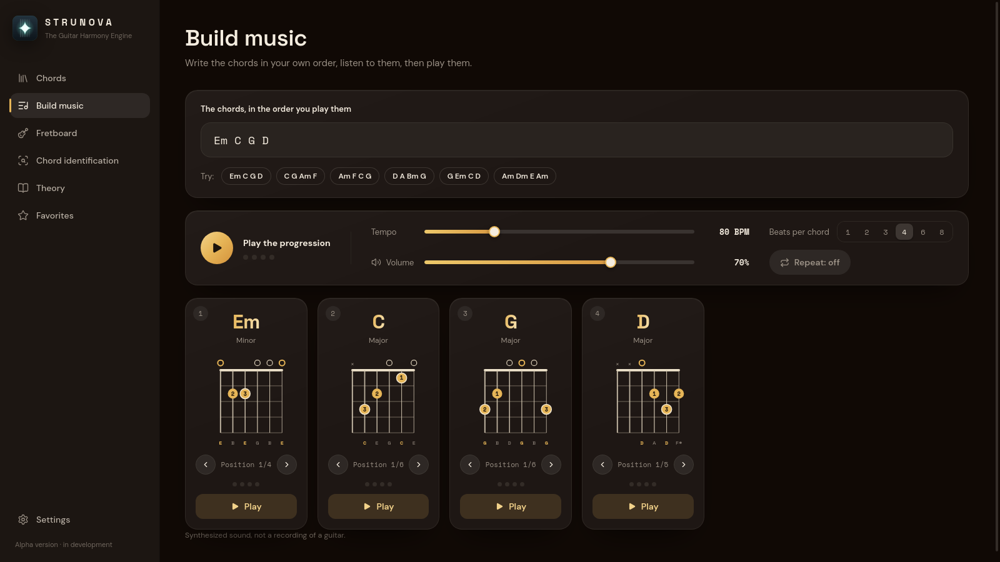
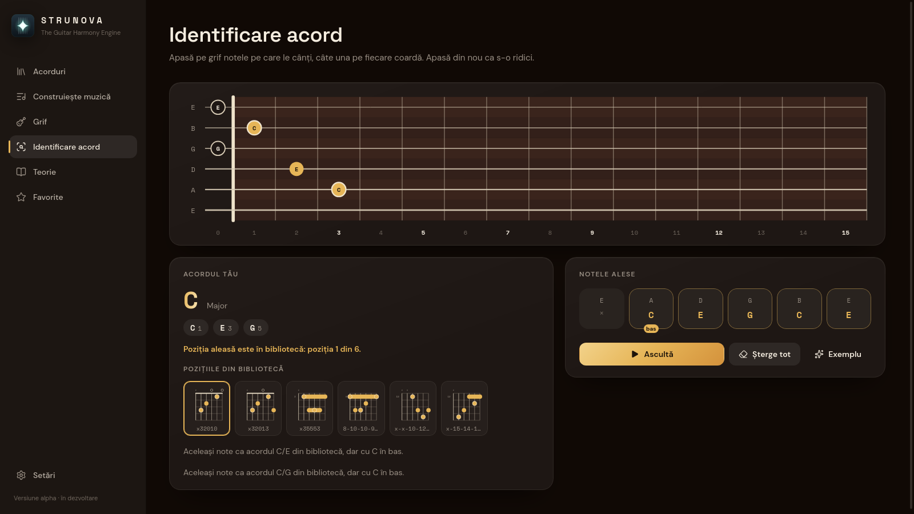
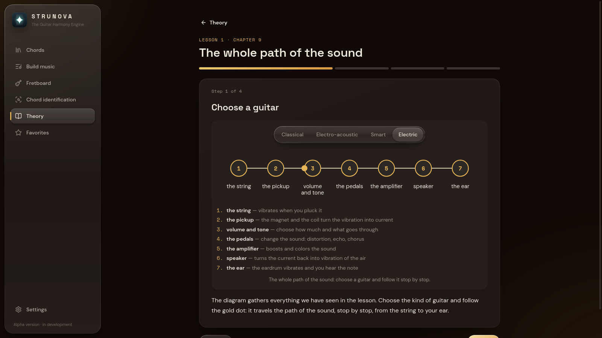
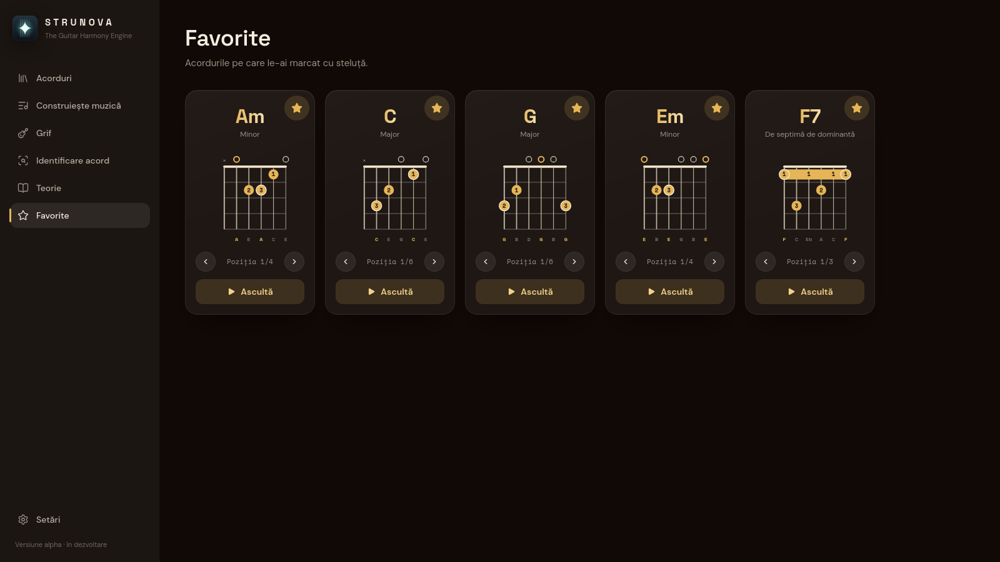

The Guitar Harmony Engine
Find, hear and understand guitar chords.
STRUNOVA is a desktop app for finding, exploring and identifying guitar chords. Every chord and every position comes from a checked library: nothing is made up.
STRUNOVA is in alpha and is not ready for everyday use yet. Its interface is in Romanian for now.
If you have installed it, please uninstall it: installed copies do not receive
updates yet. Open the Software app, find STRUNOVA in the Installed tab and click
Uninstall, or run sudo apt remove strunova in a terminal.

- 269chords in the library
- 459documented positions
- 25chord types, from major to 7♯9
- 0invented chords
What the alpha does
A chord library you can trust, and the tools around it
Search by name, such as C, Cm7, F#m9 or G7b9, or pick a chord from the table of types and roots. Every documented position has a clear diagram, with the fingers, the open and muted strings, the root and the notes, and you can hear it strummed or string by string. Filters keep only the positions you want: by level, open or barre, place on the neck and number of fingers. And every chord has its theory: the formula, each note with its interval above the root, the bass and the inversion, and what its type is, written from open music theory textbooks.
Write a progression, then play along
Type the chords in your own order, such as Em C G D, and see each one with a diagram from the library. Hear the progression in time and follow the chord that is playing.
- Tempo from 40 to 200 beats per minute
- From 1 to 8 beats per chord, with repeat on or off
- Another position for any chord, with the arrows

Which chord am I playing?
Choose one note per string on a fretboard, and STRUNOVA names the chords of its library that have exactly those notes, and tells you whether your position is one of its own.
- A wooden fretboard with 12, 15 or 17 frets
- An Example button that puts a position from the library on the neck
- Chords with the same notes over another bass, named apart

Learn how a guitar makes its sound
Lesson 1 explains, card by card, what sound is, how classical, acoustic, electro-acoustic, smart and electric guitars make it, and how amplifiers and effects shape it.
- 10 chapters, 74 cards and more than 40 drawings
- Notes to hear, and an interactive map of the whole sound path
- A test of ten questions, with your score

Your chords, your way
Star a chord to keep it with the exact position you were looking at, and find your favorites as cards to see and hear. Settings are saved automatically.
- The volume, kept from one session to the next
- Sound as soon as you choose a note or a chord
- The length of the fretboard and note names under the mouse

-
Warm and focused
A dark, warm design with a gold accent, made to let the chords stand out.
-
Motion like iOS and macOS
Buttons give way under a click, selections slide, sliders glide and fingers move to the next position.
-
Synthesized strings
Plucked strings synthesized in the app, in tune to within a cent across the neck. The app says so: no recordings pretend to be a real guitar.
Our principle
No invented chords
STRUNOVA shows only chords and positions that exist and are documented in its library. If a chord is not there yet, the app says so instead of making one up.
-
Private by design
The app works offline, with no account and no tracking. Your settings, favorites and lessons read stay on your computer.
-
No cookies here either
This website uses no cookies and no analytics.
Download
Try the alpha
New in 0.16.0: the theory of every chord. Its card now has a Theory view, with the formula, each note with its interval above the root, the bass and the inversion, and an explanation of its type written from open music theory textbooks. Long chord names no longer get cut off in the table. Every version.
STRUNOVA 0.16.0 alpha
Debian package · 64-bit (x86-64) · 3.4 MB · Made for Debian 13
Download for Linux (.deb)By downloading, you agree to the Terms of Use.
STRUNOVA 0.16.0 is an early alpha, not ready for everyday use yet. Installed copies do not receive updates yet: each new version is offered on this page.
SHA-256 of the package:
8ae26fd4b83acc31173a6350d7f81c3a13aab472306100b33ffa12b02c657909
Install
- Open the downloaded file: the Software app opens.
- Click Install and enter your password.
- STRUNOVA appears in your application menu. Made for Debian 13 (64-bit).
Or, in a terminal, in the folder where you saved the file:
sudo apt install ./STRUNOVA_0.16.0_amd64.deb
To remove STRUNOVA, uninstall it from the Software app, or run
sudo apt remove strunova. Your settings, favorites and lessons
read stay in the folder ~/.local/share/ro.strunova.desktop;
delete it to remove them too.
Other Linux distributions based on Debian may work, but they have not been tested. A Windows version is planned.